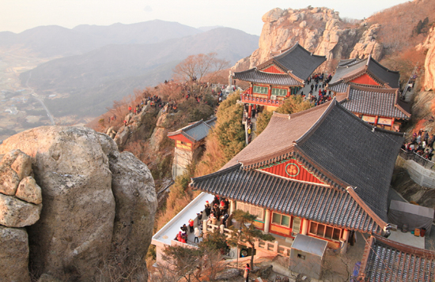
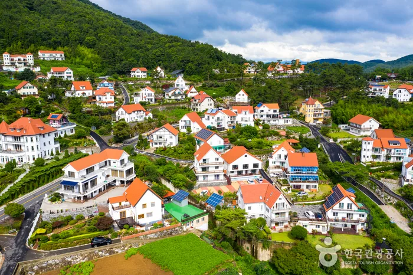

01
🚗 DAY 1 — 화성 → 남해
점심 → 보리암 → 독일마을 → 숙소 체크인·휴식 → 저녁
08:00 – 09:00
화성 출발
고속도로 약 3.5~4시간. 휴게소 1~2회 정차하며 발목·종아리 스트레칭.
🚗 장거리 이동
12:00 – 13:20
🍽 점심: 도우(DOW)
"남해 바다 앞에서 즐기는 유러피안 감성. 해산물 코스 전, 입맛을 깔끔하게 여는 첫 식사."
남해 양식 레스토랑. 이후 해산물·막걸리 식단과 밸런스를 맞추는 시작점.
📍 경남 남해군 삼동면 삼이로 330 | 📞 0507-1354-7193 | 🔗 네이버 지도
양식
📍 경남 남해군 삼동면 삼이로 330 | 📞 0507-1354-7193 | 🔗 네이버 지도
13:40 – 14:50
⛰ 보리암

"금산 정상 681m, 한려해상이 발 아래로. 한국 3대 기도처에서 소원 하나쯤 빌어볼 만한 곳.이성계가 아직 장군이던 시절 이 곳에서 기도를 하고 왕이 되었다."
관람료 1,000원 (만 70세 이상 면제). 산불기간 통제 가능성 확인.
📍 제2주차장 및 매표소: 경남 남해군 이동면 보리암로 586 116-2
주의사항: 제2주차장 만차 시, 제1주차장(이동면 신전리 5) 대기 혹은 주차 후 셔틀 이용
🙏 3대 기도처
도우에서 약 20분
📍 제2주차장 및 매표소: 경남 남해군 이동면 보리암로 586 116-2
주의사항: 제2주차장 만차 시, 제1주차장(이동면 신전리 5) 대기 혹은 주차 후 셔틀 이용
15:10 – 15:50
🏘 독일마을

"1960~70년대 파독 광부·간호사들의 향수가 깃든 마을. 남해 바다 위에 독일 지붕이 얹혀 있는 묘한 풍경."
포토스팟 중심 가벼운 산책. 마을 내 파독전시관 방문 필수(만 65세 이상 무료).
📍 주차장: 경남 남해군 삼동면 봉화리 2572-1 (주차장 기준 한쪽은 독일마을, 다른 한쪽은 원예예술촌)
※ 늦어도 17:00에는 숙소로 출발 권장
📸 포토 산책
보리암에서 약 25분
📍 주차장: 경남 남해군 삼동면 봉화리 2572-1 (주차장 기준 한쪽은 독일마을, 다른 한쪽은 원예예술촌)
※ 늦어도 17:00에는 숙소로 출발 권장
시간 여유 시 (선택)
🌺 원예예술촌
"배우 박원숙 카페로 유명한 곳. 아름다운 정원 산책 코스."
독일마을 주차장을 사이에 두고 바로 옆에 위치하여 동선이 매우 편리함.
선택 사항
15:50 – 17:00
🏠 숙소 이동 & 체크인

"다랭이마을이 내려다보이는 오션뷰 펜션에서 하루의 피로를 내려놓기."
그랜드오션 펜션 (다랭이마을 권역). 독일마을→다랭이 약 50~60분 이동.
📍 경남 남해군 남면 남면로 930 | 📞 055-864-2020
삼동→남면 ~60분
체크아웃 11:00
📍 경남 남해군 남면 남면로 930 | 📞 055-864-2020
17:00 – 18:00
💤 실내 휴식
장거리 이동 + 관광 피로 해소. 약 1시간 쉬며 저녁 준비.
필수 휴식
18:00 – 19:30
🍽 저녁: 시골할매 막걸리
"3대에 걸쳐 가업을 이루고 있는 대한민국의 토속적인 음식을 맛볼 수 있는 음식점. 외부 테라스에서 바다를 바라보며 식사 가능하여 바다를 바라보며 식사."
📍 주차장: 경남 남해군 남면 남면로 654 | 📞 0507-1324-8381
⚠️ 라스트오더: 19:00
※ 다랭이마을 공영주차장 주차 후 마을길을 따라 내려오면 암수바위 옆에 위치
19:30 ~
숙소 복귀 & 조기 취침
둘째 날 이동·관광 대비 충분한 수면.
카페 휴식 포인트
- 카페톨 — 다랭이마을 인근 바다 뷰 카페. 저녁 전후로 활용. "다랭이 계단식 논밭 너머 수평선이 보이는 작은 카페. 해질녘 특히 좋음."
🔄 대체 관광지 안내
보리암 불가 시
→
상주은모래비치
평지 해변 산책, 무릎 부담 없음
독일마을 불가 시
→
섬이정원
실내+평지 정원, 날씨 무관
둘 다 불가 시
→
상주은모래비치 + 섬이정원
평지 조합으로 편안한 오후